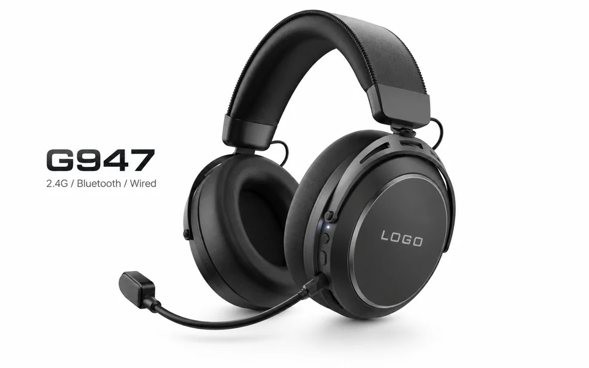
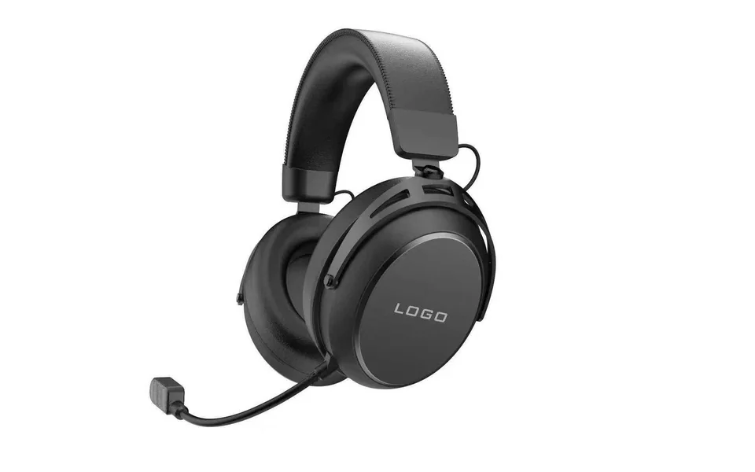
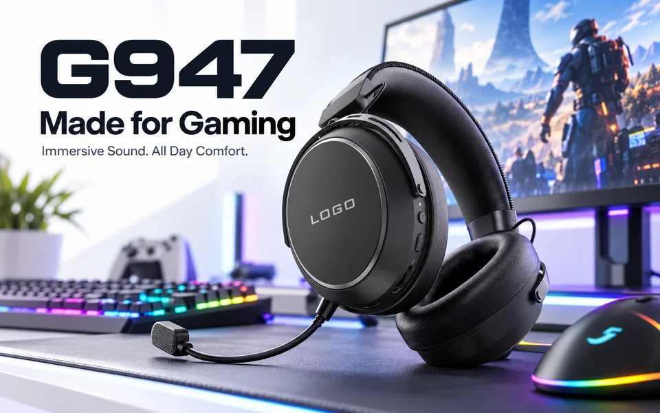
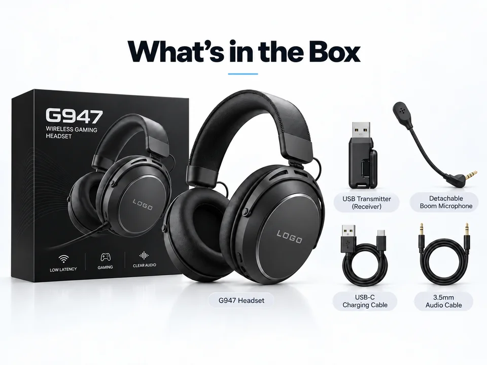
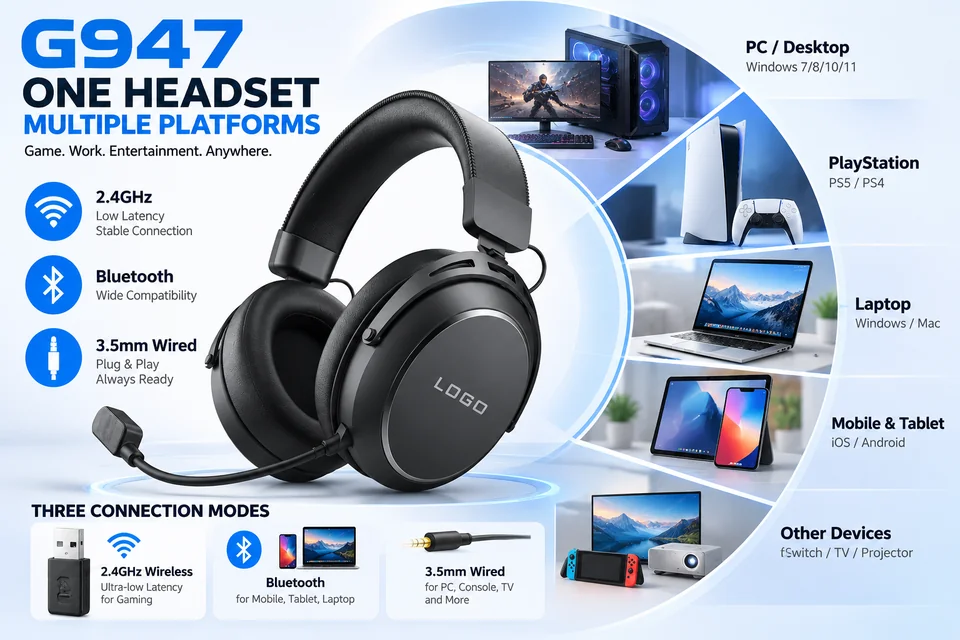

Headset shape and branding area
Review the black finish, headband profile, earcup styling and visible logo area. The 2.4G, Bluetooth and wired direction follows the catalogue; confirm each required mode on the selected sample.

Tri-mode wireless gaming headset
A 50mm gaming headset positioned for 2.4G wireless, Bluetooth and wired use, with detachable microphone and streamlined over-ear design.

G947 product presentation
These supplied creative images include AI-generated lifestyle scenes. They are presentation illustrations, not real customer photos, connection demonstrations or comfort-test results. Confirm the exact headset version on a physical sample.

Review the black finish, headband profile, earcup styling and visible logo area. The 2.4G, Bluetooth and wired direction follows the catalogue; confirm each required mode on the selected sample.

Creative illustration for product presentation. The scene and its comfort wording do not establish device compatibility, measured sound quality or all-day wearing comfort.
Creative wearing reference, not a customer photo or fit measurement. Check clamping feel, cushion contact, adjustment and microphone position on the sample you plan to order.

The USB receiver, detachable boom microphone, USB-C charging cable and 3.5mm audio cable are confirmed standard accessories for this G947 version. The image is a packaging illustration, not a production packing photo; confirm final retail artwork and the approved packing list for your order.
Ask about a G947 detail or compare wireless and tri-mode headset models for your brand.
Multi-platform connection illustration
Review the G947 connection illustration for desktop, console, laptop and mobile setups. Platform names do not mean that every connection mode or microphone feature works on every device.

Ask about G947 with your device or read the connection-mode buyer checklist.
Key points
Use the confirmed 2026 catalogue details below to compare G947 before requesting the selected sample version.
The catalogue positions G947 for 2.4G wireless, Bluetooth and wired use with a USB receiver.
Catalogue data lists a 50mm driver, 32-ohm impedance and 20Hz-20kHz frequency response.
The catalogue lists up to 10 meters of transmission distance and approximately 20ms wireless latency.
The plug-in boom microphone, aluminum frame direction and clean over-ear structure support sample comparison.
Catalogue specifications
Confirm the final battery, receiver, accessories and packaging on the selected sample before order approval.
Customization
For this G947 configuration, the standard accessory set is a USB receiver, detachable boom microphone, USB-C charging cable and 3.5mm audio cable. Confirm the final retail artwork, manual language and approved packing list with your sample.
Product fit
Use these points to understand where this model fits in a product collection.
Product FAQ
Yes. It can be reviewed as part of a model shortlist before confirming sample direction.
Yes. Color direction, logo and package discussion can be reviewed after model interest is confirmed.
Yes. TALRIVO can recommend related wired and wireless models for comparison.
The USB receiver, detachable boom microphone, USB-C charging cable and 3.5mm audio cable are confirmed standard accessories for this G947 version. Confirm the final retail artwork, manual language and approved packing list with your sample.
No. The supplied creative material includes AI-generated lifestyle scenes and a connection illustration. These are not real customer photos, compatibility demonstrations or comfort-test results. Check the exact device, connection mode, microphone behavior and wearing fit on the selected sample.
Related pages
Share the destination market, channel, quantity range, sample timing and customization scope for a G947 review.